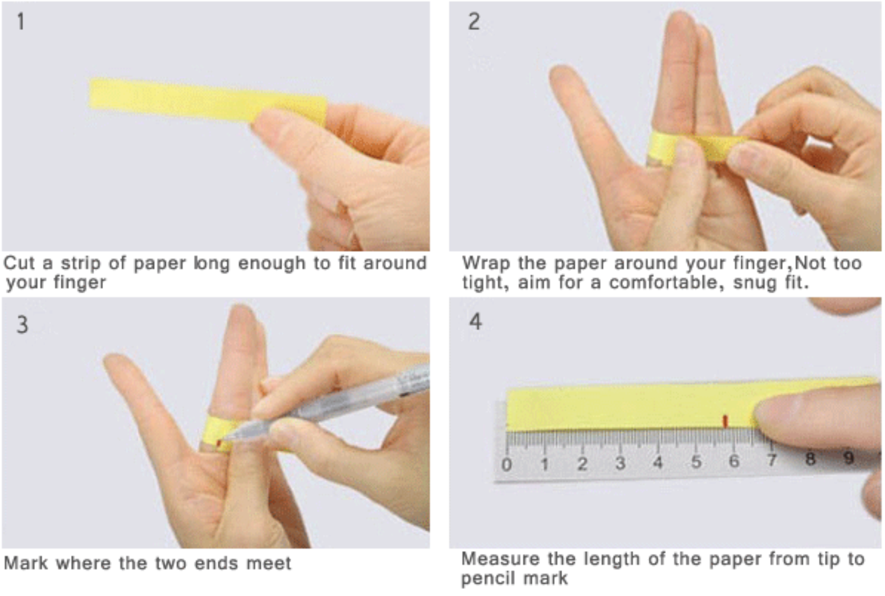
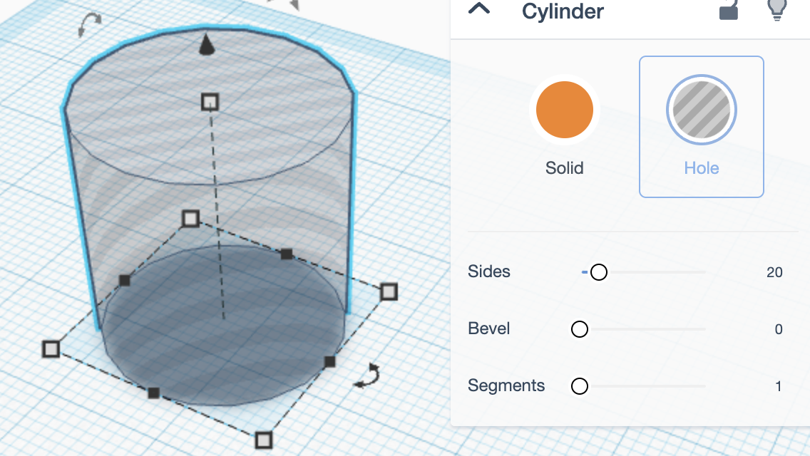
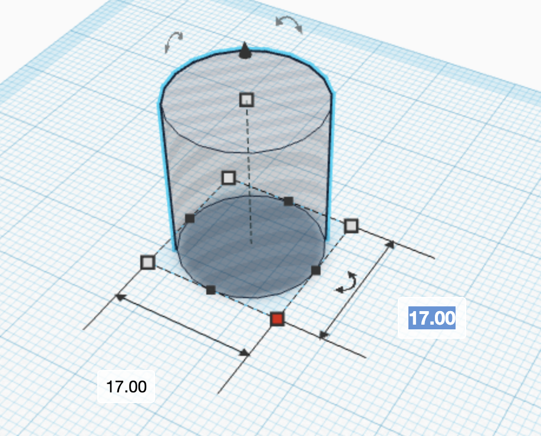
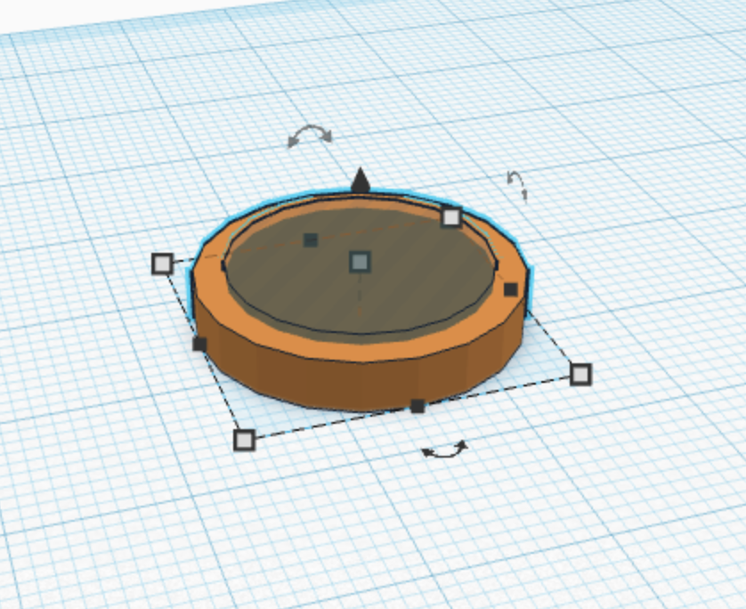
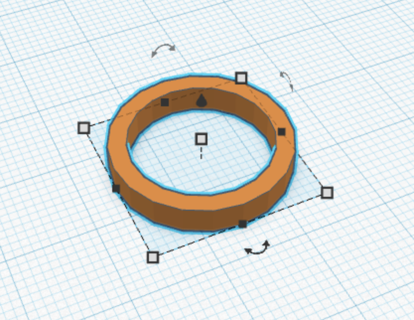
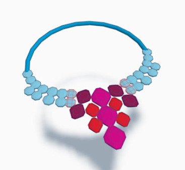

⬡ 3D Modeling • Lesson 3 ⬡
💍 3D PRINT A CUSTOM RING
Design it. Print it. Wear it.
🧠 Vocab / Vocabulario
3D Printing – Turning a digital model into a real object by stacking layers of melted plastic / Convertir un modelo digital en un objeto real apilando capas de plástico derretido
Slice – Telling the printer how to build your object layer by layer / Indicarle a la impresora cómo construir tu objeto capa por capa
📣 You built a 3D coin. Now design a custom ring in TinkerCAD – and 3D print it for real.
Watch: What is 3D Printing?
Watch: 3D Printing Best Practices
🚨 3 Rules for a Successful Print:
1️⃣ Flat base – your design needs a flat bottom
2️⃣ No overhangs – plastic can't float in mid-air!
3️⃣ Iterate – every failed print teaches you something
📏 Measure Your Finger
✂️ Cut a strip of paper. Wrap it around your finger. Mark where it meets.
📏 Measure the paper to the mark in centimeters (cm).
🔄 Multiply by 10 to convert to millimeters (mm). (Ex: 4.93 cm × 10 = 49.3 mm)
➗ Divide by 3.14 = your ring diameter. (Ex: 49.3 ÷ 3.14 = 15.7 mm)

Practice Ring Designs
👉 Log in: tinkercad.com/joinclass — ask your teacher for the class code.
📚 Open the "Ring" activity in our class, or go to Learn → "3D Print Your Own Ring" → complete all 3 lessons (basic, diamond, heart)
💡 After each practice ring: Ctrl+C to copy it before starting the next practice ring so you don't lose it.
💍 Design Your Custom Ring
Build your own ring from scratch. Follow these steps:
A. Drag a cylinder → make it a Hole → set width to your finger diameter

B. Add another cylinder for the outside → make it 4 mm larger than the hole

C. Select both → set depth to 4 mm

D. Click Group to combine them → now customize. Add shapes, text, patterns.

💡 Remember the 3 rules: flat base, no overhangs, and iterate.
📤 Export & Submit
PNG → "Send To" → Export as PNG → upload to this Canvas assignment
STL → Leave your design in TinkerCAD – your teacher will access it from the class dashboard to slice & print.
💬 Reflect
In the comments of your submission, finish this sentence in 2-3 sentences:
"If my ring didn't print correctly, the first thing I would check is ___ because..."
Word Bank / Banco de Palabras
flat base • overhang • size • layers • diameter • support • iterate • slice
⬆️ Level Up
Done early? Design a necklace pendant. Follow the "Create a Fancy Necklace" tutorial.

✅ Done?
PNG uploaded + reflection in comments = complete
📣 Construiste una moneda 3D. Ahora diseña un anillo personalizado en TinkerCAD – y imprímelo en 3D de verdad.
Mira: ¿Qué es la impresión 3D?
Mira: Mejores prácticas para impresión 3D
🚨 3 Reglas para una impresión exitosa:
1️⃣ Base plana – tu diseño necesita un fondo plano
2️⃣ Sin voladizos – ¡el plástico no flota en el aire!
3️⃣ Itera – cada impresión fallida te enseña algo
📏 Mide tu dedo
✂️ Corta una tira de papel. Enróllala en tu dedo. Marca donde se junta.
📏 Mide el papel hasta la marca en centímetros (cm).
🔄 Multiplica por 10 para convertir a milímetros (mm). (Ej: 4.93 cm × 10 = 49.3 mm)
➗ Divide entre 3.14 = diámetro de tu anillo. (Ej: 49.3 ÷ 3.14 = 15.7 mm)
Practica diseños de anillos
👉 Inicia sesión: tinkercad.com/joinclass — pregúntale a tu maestro/a por el código de la clase.
📚 Abre la actividad "Ring" en nuestra clase, o ve a Learn → "3D Print Your Own Ring" → completa las 3 lecciones (básico, diamante, corazón)
💡 Después de cada anillo de práctica: Ctrl+C para copiarlo antes de empezar el siguiente anillo de práctica, para que no lo pierdas.
💍 Diseña tu anillo personalizado
Construye tu propio anillo desde cero. Sigue estos pasos:
A. Arrastra un cilindro → hazlo Hole → pon el ancho al diámetro de tu dedo
B. Agrega otro cilindro para el exterior → hazlo 4 mm más grande
C. Selecciona ambos → pon la profundidad en 4 mm
D. Haz clic en Group para combinarlos → ahora personaliza. Agrega formas, texto, patrones.
💡 Recuerda las 3 reglas: base plana, sin voladizos, e itera.
📤 Exporta y envía
PNG → "Send To" → Export as PNG → sube a esta tarea en Canvas
STL → Deja tu diseño en TinkerCAD – tu maestro/a lo verá desde el panel de la clase para cortarlo e imprimirlo.
💬 Reflexión
En los comentarios de tu envío, completa esta oración en 2-3 oraciones:
"Si mi anillo no se imprimiera correctamente, lo primero que revisaría es ___ porque..."
Banco de Palabras / Word Bank
base plana • voladizo • tamaño • capas • diámetro • soporte • iterar • cortar
⬆️ Sube de Nivel
¿Terminaste? Diseña un dije para collar. Sigue el tutorial "Create a Fancy Necklace".
✅ ¿Listo?
PNG subido + reflexión en comentarios = completo